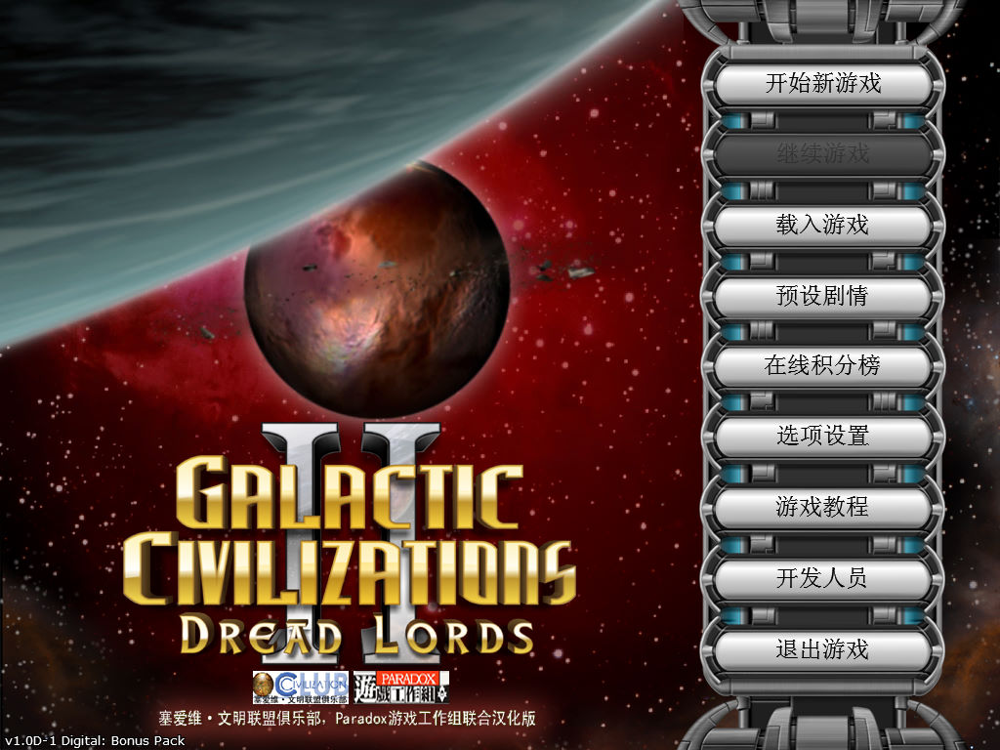
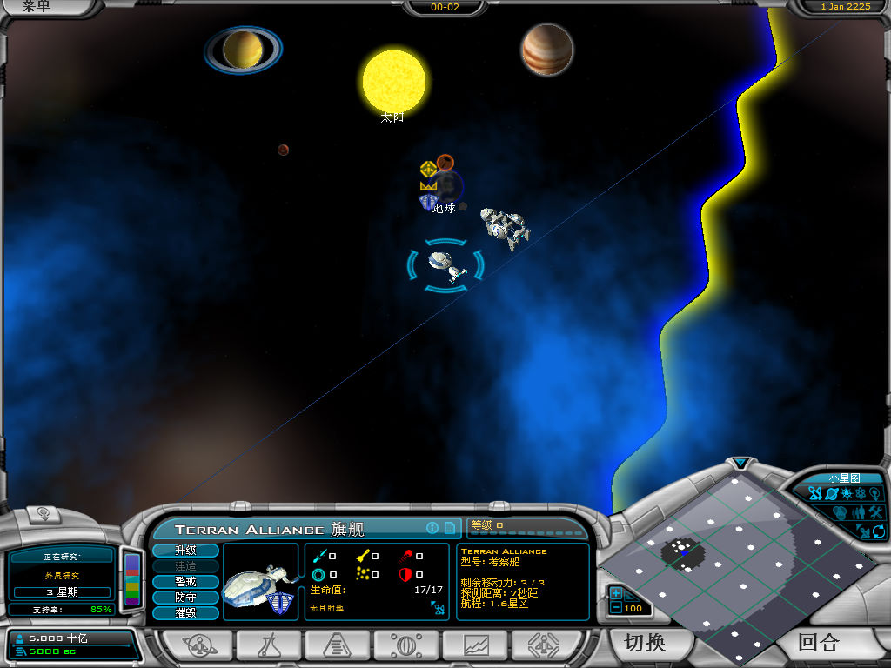
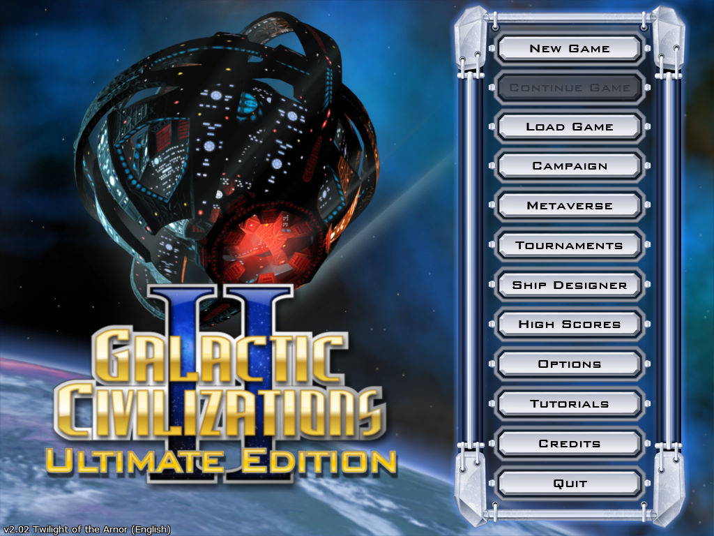

名稱：銀河文明2：恐怖霸主 (Galactic Civilizations 2: Dread Lords，簡中／英文版)
簡介：Stardock 2006年出品的回合制策略遊戲，由Paradox代理發行。2007年與2008年分別
推出「黑暗化身（Dark Avatar）」、「阿諾爾的黃昏（Twilight of the Arnor）」
資料片，2008年再推出整合三者的「無盡的宇宙（Endless Universe）」，並於2009
年更名為「終極版（Ultimate Edition）」 [待補]。



備註：本版為1.0D1簡中漢化版（不含資料片）
保護：終極版為序號（GD822-DBFC2-A68CF-38BF4-9F0BF-AAC1A）
備註：簡中漢化版只能在簡中系統上執行，否則會亂碼。